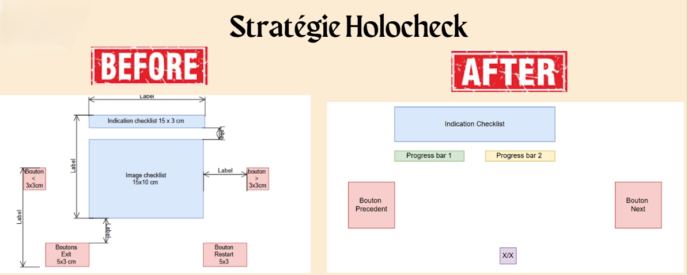
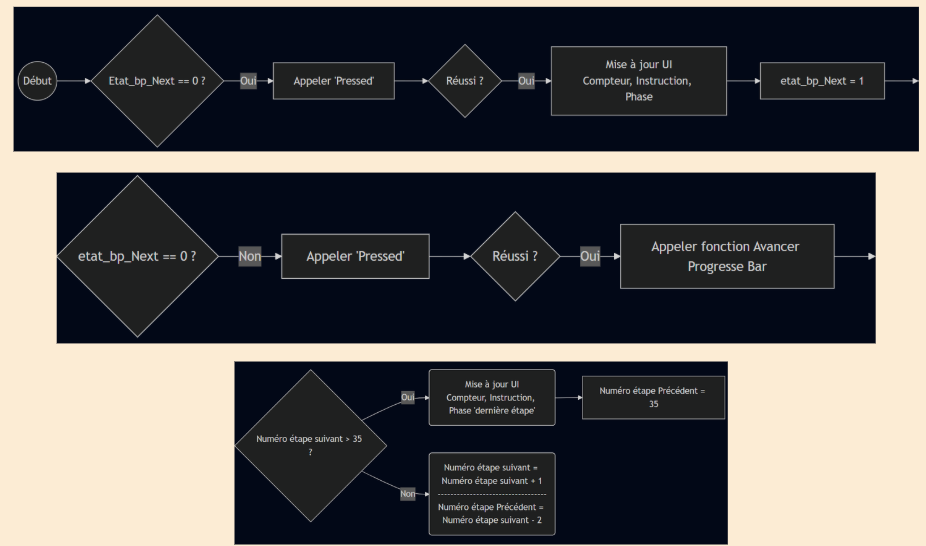

HoloCheck est une solution innovante de Réalité Mixte conçue pour sécuriser la formation des pilotes sur l'hélicoptère Guimbal Cabri G2. En exploitant la puissance du moteur Unreal Engine 5 et du casque HoloLens 2, nous proposons d'intégrer les procédures vitales directement dans le champ de vision du pilote[cite: 37, 84].

Dans un habitacle ne mesurant que 1,24 m de large, l'utilisation d'une checklist papier traditionnelle force l'apprenti pilote à détourner le regard de son environnement extérieur et à lâcher ponctuellement les commandes[cite: 33, 34, 416]. Cette rupture d'attention peut s'avérer dangereuse lors des phases critiques du vol.

L'application permet d'afficher les instructions en superposition avec le tableau de bord réel. Grâce aux capteurs de profondeur de l'HoloLens 2, les hologrammes sont "ancrés" de manière stable dans l'espace (Spatial Mapping)[cite: 73].

Le projet s'appuie sur le système de scripting visuel Blueprints. J'ai implémenté une logique événementielle robuste pour surveiller les interactions en temps réel et assurer une progression fluide des étapes de vol[cite: 87, 270, 271].

La phase de test finale a été menée sur le simulateur de l'IUT de Cachan. L'utilisation du Holographic Remoting a été cruciale pour ajuster l'ergonomie en direct, directement depuis le siège du pilote[cite: 299, 301].